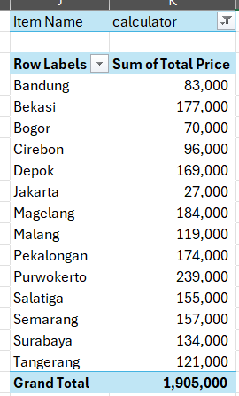
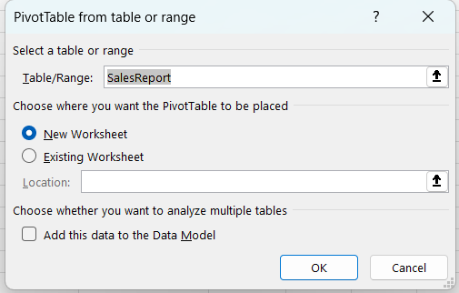
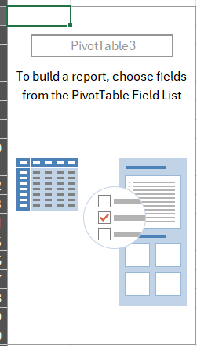
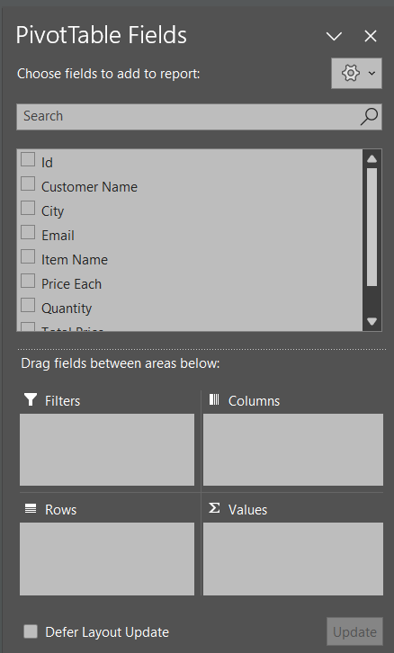
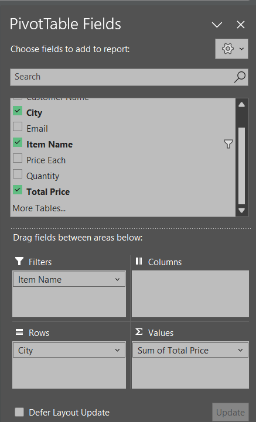
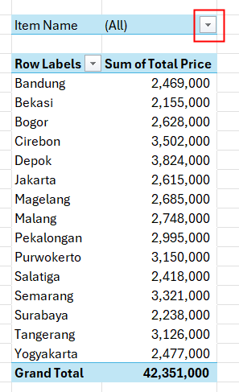
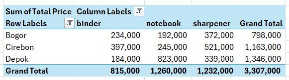

Pivot Table
Pivot table adalah salah satu fitur yang sangat berguna dalam pengolahan data. Pivot table memungkinkan kita untuk mengubah bentuk data yang ada menjadi bentuk yang lebih mudah dipahami. Dengan pivot table, kita dapat mengelompokkan data berdasarkan kriteria tertentu, menghitung nilai rata-rata, jumlah, atau nilai lainnya, dan menampilkan data dalam bentuk tabel yang lebih mudah dipahami.
Cara Membuat Pivot Table
Buka file Excel yang berisi data yang ingin diolah. Anda bisa menggunakan template dari file berikut (sama dengan file di part sebelumnya): Template.xlsx
Blok semua data yang ingin diolah. Di tab Pivot Table, blok semua data yang ingin diolah. Kita dapat menggunakan CTRL + A untuk memblok semua data di tabel tersebut.
Klik Insert di menu bar, lalu pilih Pivot Table.
Tentukan lokasi pivot table akan dibuat, lalu klik OK.

Maka tampilannya akan sepert ini

Cara Mengolah Data di Pivot Table
{kind=link}
Saat kita klik di bagian Pivot Table tersebut, maka akan muncul Pivot Table Field List di sebelah kanan. Di sini kita dapat mengatur bagaimana data akan diolah.
Pada bagian atas, terdapat berbagai macam fields di dalam table tersebut, Pada bagian bawah, kita dapat mengatur bagaimana data akan diolah. Ada 4 bagian yang dapat diatur:
Rows: Bagian ini digunakan untuk menentukan data apa yang akan dijadikan baris di pivot table.
Columns: Bagian ini digunakan untuk menentukan data apa yang akan dijadikan kolom di pivot table.
Values: Bagian ini digunakan untuk menentukan data apa yang akan dihitung di pivot table.
Filters: Bagian ini digunakan untuk menentukan data apa yang akan dijadikan filter di pivot table.
Cara menggunakannya
click and drag semua field yang akan ditampilkan. Pada contoh gambar di atas, kita ingin menampilkan City sebagai barisnya dan Total Price sebagai valuenya. Karena kita ingin filter data berdasarkan Item Name, maka kita juga memasukkan Item Name ke dalam filter.
Gunakan gambar ini sebagai referensi:
{kind=link}
Catatan: Kita juga bisa mengedit value yang akan ditampilkan. Klik tombol dropdown pada values tersebut, lalu pilih Value Field Settings. Di sini kita bisa mengubah bagaimana data akan dihitung, misalnya menjadi rata-rata, jumlah, atau lainnya.
Kemudian, tampilan pivot table akan berubah sesuai dengan pilihan kita. Untuk menerapkan filter, kita dapat menekan dropdown di bagian atas sebagai filternya:
{kind=link}
Selamat, Anda telah berhasil membuat pivot table!
Catatan: Pivot table sangat berguna untuk mengolah data yang besar. Dengan pivot table, kita dapat mengelompokkan data berdasarkan kriteria tertentu, menghitung nilai rata-rata, jumlah, atau nilai lainnya, dan menampilkan data dalam bentuk tabel yang lebih mudah dipahami.
Latihan
Buatlah Pivot Table untuk mengetahui 3 kota dengan penjualan tertinggi terhadap 3 item yang paling banyak terjual. Gunakan data dari file Template.xlsx.
Tips: Gunakan Filter untuk memilih 3 item yang paling banyak terjual.
